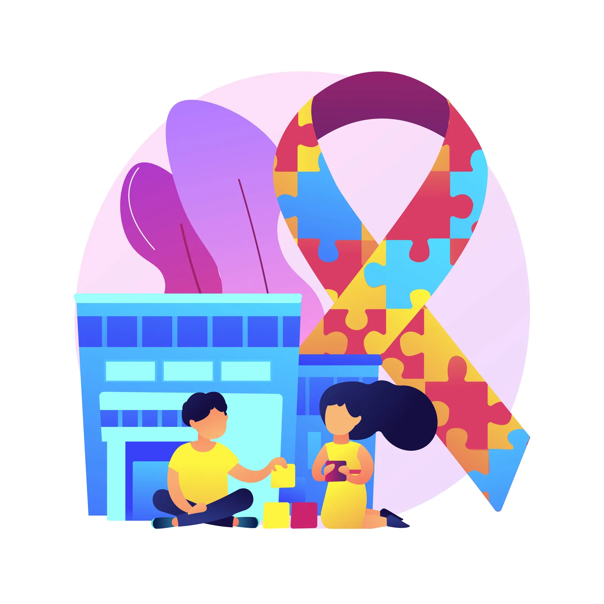

Acompanhe a AMABA
Novidades, encontros e próximos passos.
Este espaço reunirá notícias sobre a associação, campanhas, atividades e eventos abertos à comunidade.

Atualizações
Notícias da AMABA.
Campanhas, parcerias, ações e comunicados institucionais aparecerão aqui quando estiverem prontos para publicação.
Atualizações em preparação
Em breve, novas histórias
Ainda não há notícias publicadas nesta página. Volte para acompanhar as próximas atualizações.
Participe
Agenda de encontros.
As informações de cada evento, como data, horário, local e forma de participação, serão divulgadas quando confirmadas.
Agenda em preparação
Próximos eventos
No momento, não há eventos programados para divulgação. Acompanhe esta página para saber das próximas atividades.
Conheça
Projetos e atividades Veja também o que fazemos.
Explore as frentes de atuação que dão vida à rede de cuidado da AMABA.